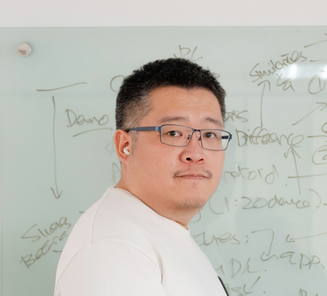

Industrial AI Deployment • Computer Vision Integration • Cross-Functional Solutions

Over 9 years of experience in computer vision, industrial automation, and AI model deployment across semiconductor, electronics manufacturing, and global refurbishment industries.
Proven track record of bridging the gap between advanced AI capabilities and production environments, having successfully deployed 34+ automated systems globally, including high-stakes deployments in the US, Japan, and China.
Expertise in designing configurable rule engines, integrating deep learning models (CNNs, ResNet50, Xception) into production workflows, and developing robust automation frameworks using Python, C++, and C#.
Strong background in semiconductor factory automation, including wafer-die screening, equipment integration, and cross-functional root-cause analysis to optimize manufacturing yield.
Demonstrated ability to operate directly with tier-1 customers to translate complex operational requirements into scalable, production-ready software architectures.
AI & Deep Learning:TensorFlow, CNN, ResNet50, Xception, VGG, Image Classification
Computer Vision & AOI:OpenCV, HALCON, Rule-Based Vision, OCR (Tesseract), Template Matching, State Recognition, Notch Inspection
Software & Automation:Python, C#, C++, PowerShell, Windows Forms, FastAPI, Socket Programming, PLC Communication
Industrial Systems & DevOps:Factory Automation, Equipment Integration, Tray Mapping, Azure DevOps, CI/CD Pipelines, AWS S3, NoSQL Database
Engineering Practices:Root Cause Analysis, Log Analysis, Production Support, Validation Reliability Engineering, Cross-Functional Collaboration
Lenovo (Phoenix Technologies) | 2025-05-05 - Present | New Taipei , Taiwan
FutureDial Inc | 2018-09-20 - 2025-04-30 | New Taipei , Taiwan
Xintec Inc | 2017-10-31 - 2018-06-15 | Taoyuan , Taiwan
Jettech Technology | 2015-09-16 - 2017-09-26 | New Taipei , Taiwan
M.S. Electronic Engineering
National Kaohsiung University of Science and Technology
(
2013-09-01 -
2015-07-01
)
Thesis: Pedestrian Occlusion Detection Using OpenCL Framework
B.S. Electronic Engineering
National Kaohsiung University of Science and Technology
(
2009-09-01 -
2013-07-01
)